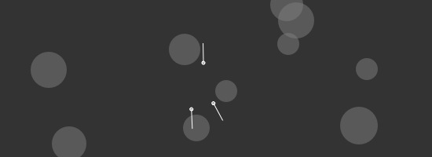

# --- GEOMETRY -------------------------------------------------------------- from math import degrees, atan2 from math import sqrt, pow from math import radians, sin, cos def angle(x0, y0, x1, y1): """ Returns the angle between two points. """ return degrees( atan2(y1-y0, x1-x0) ) def distance(x0, y0, x1, y1): """ Returns the distance between two points. """ return sqrt(pow(x1-x0, 2) + pow(y1-y0, 2)) def coordinates(x0, y0, distance, angle): """ Returns the coordinates of given distance and angle from a point. """ return (x0 + cos(radians(angle)) * distance, y0 + sin(radians(angle)) * distance) # --- WORLD ----------------------------------------------------------------- class World: def __init__(self): self.obstacles = [] # --- OBSTACLE -------------------------------------------------------------- class Obstacle: def __init__(self, x, y, radius): self.x = x self.y = y self.radius = radius # --- CREATURE -------------------------------------------------------------- class Creature: def __init__(self, world, x, y, speed=1.0, size=4): self.x = x self.y = y self.speed = speed self.size = size self.world = world self.feeler_length = 25 self._vx = 0 self._vy = 0 def heading(self): """ Returns the creature's heading as angle in degrees. """ return angle(self.x, self.y, self.x+self._vx, self.y+self._vy) def avoid_obstacles(self, m=0.4, collision=4): # Find out where the creature is going. a = self.heading() for obstacle in self.world.obstacles: # Calculate the distance between the creature and the obstacle. d = distance(self.x, self.y, obstacle.x, obstacle.y) # Respond faster if the creature is very close to an obstacle. if d - obstacle.radius < 4: m *= 10 # Check if the tip of the feeler falls inside the obstacle. # This is never true if the feeler length # is smaller than the distance to the obstable. if d - obstacle.radius <= self.feeler_length: tip_x, tip_y = coordinates(self.x, self.y, d, a) if distance(obstacle.x, obstacle.y, tip_x, tip_y) < obstacle.radius: # Nudge the creature away from the obstacle. m *= self.speed if tip_x < obstacle.x: self._vx -= random(m) if tip_y < obstacle.y: self._vy -= random(m) if tip_x > obstacle.x: self._vx += random(m) if tip_y > obstacle.y: self._vy += random(m) if d - obstacle.radius < 4: return def roam(self): """ Creature changes heading aimlessly. With its feeler it will scan for obstacles and steer away. """ self.avoid_obstacles() v = self.speed self._vx += random(-v, v) self._vy += random(-v, v) self._vx = max(-v, min(self._vx, v)) self._vy = max(-v, min(self._vy, v)) self.x += self._vx self.y += self._vy # --------------------------------------------------------------------------- size(550, 200) # Create a world with obstacles at random positions. world = World() for i in range(15): obstacle = Obstacle(random(WIDTH), random(HEIGHT), random(10, 30)) world.obstacles.append(obstacle) # Create a number of ants. ants = [] for i in range(4): ant = Creature(world, 225, 100, speed=2.0) ants.append(ant) speed(30) def draw(): background(0.2) # Draw all the obstacles in the world. fill(0.5, 0.5) for obstacle in world.obstacles: oval(obstacle.x - obstacle.radius, obstacle.y - obstacle.radius, obstacle.radius * 2, obstacle.radius * 2) # Draw each ant and its feeler. stroke(1) fill(1, 0.5) for ant in ants: push() transform(CORNER) translate(ant.x, ant.y) rotate(-ant.heading()) line(0, 0, ant.feeler_length, 0) pop() oval(ant.x-ant.size*0.5, ant.y-ant.size*0.5, ant.size, ant.size) # Move all the ants around. for ant in ants: ant.roam()